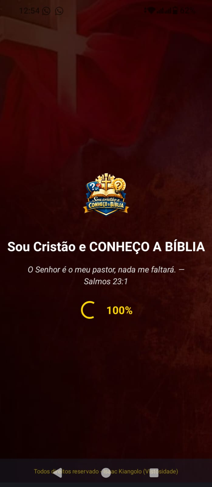
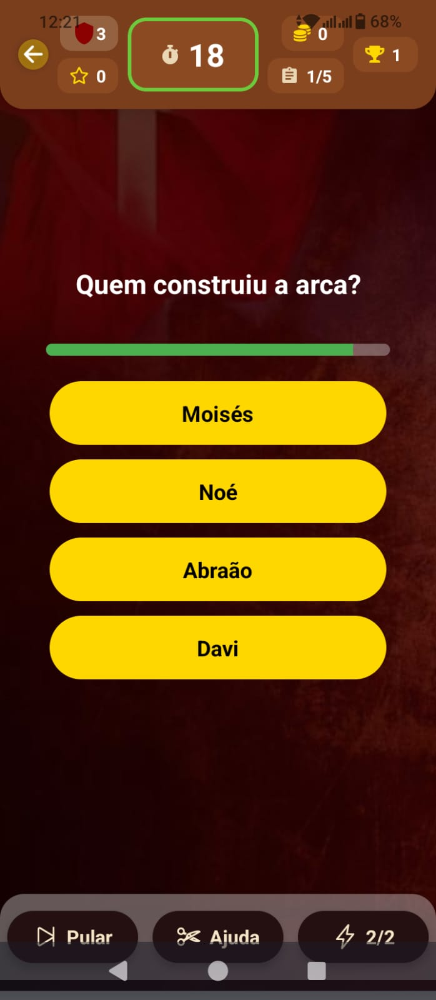
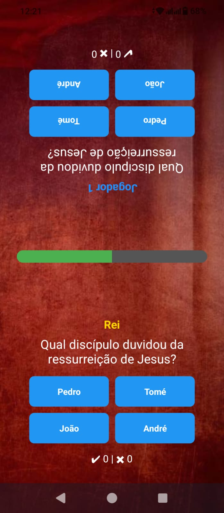

Sobre o Aplicativo
Sou Cristão e Conheço a Bíblia é um aplicativo de quiz bíblico desenvolvido para ajudar cristãos a aprender mais sobre a Palavra de Deus de forma interativa e divertida.
O aplicativo apresenta perguntas sobre personagens bíblicos, histórias, versículos e curiosidades das Escrituras, incentivando o estudo da Bíblia através de desafios e jogos educativos.
Com diferentes modos de jogo, ranking de jogadores e sistema de conquistas, o aplicativo torna o aprendizado bíblico mais dinâmico e motivador.
Funcionalidades
Perguntas Rápidas
Responda questões bíblicas em ritmo acelerado e teste seu conhecimento.
Modo Carreira
Suba de nível, desbloqueie conquistas e evolua no jogo.
Multijogador
Jogue com amigos ou com pessoas aleatórias online.
Curiosidades Bíblicas
Aprenda fatos interessantes sobre personagens e histórias da Bíblia.
Perfil do Usuário
Visualize pontuação, estatísticas e conquistas.
Ranking Global
Compare seu desempenho com jogadores do mundo todo.
📲 Telas do Aplicativo

Tela Inicial – Início rápido ou acesso ao modo carreira.

Modo Carreira – Evolua através de níveis e desafios diários.

Multijogador – Partidas em tempo real contra amigos ou adversários.

Perfil – Estatísticas, conquistas e progresso pessoal.

Curiosidades – Fatos bíblicos, dicas de estudo e curiosidades sobre versículos.
Versículo do Dia
"Porque Deus amou o mundo de tal maneira que deu o seu Filho unigênito..." – João 3:16
"O Senhor é meu pastor, nada me faltará." – Salmo 23:1
"Posso todas as coisas naquele que me fortalece." – Filipenses 4:13
10K+
Downloads
4.8 ⭐
Avaliação
500+
Perguntas Bíblicas
Contato
Envie-nos uma mensagem: @conhecoBiblia.com
Doações
💡 Sabias quê? A tua doação ajuda a manter o aplicativo atualizado e com novos conteúdos bíblicos.Se você deseja apoiar o desenvolvimento do aplicativo Sou Cristão e Conheço a Bíblia, qualquer contribuição é bem-vinda.
💚 Doar via WhatsApp